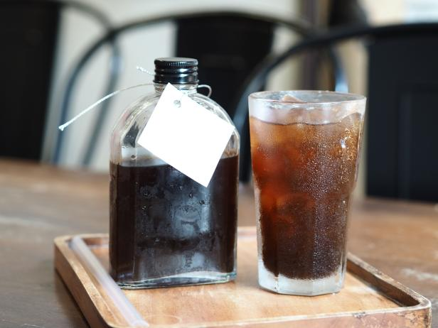

Cold Brew

Description
This recipe contains kefir, which is a fermented milk product that is rich in beneficial bacteria. The honey provides prebiotic fiber, which helps to feed the beneficial bacteria in your gut. Cinnamon is also known to have antibacterial properties and may help to support a healthy gut microbiome. Enjoy your microbiome-rich cold brew!
Ingredients
- 1 cup of coarsely ground coffee
- 4 cups of filtered water
- 1/4 cup of plain kefir
- 1 tablespoon of honey
- 1/4 teaspoon of ground cinnamon
- Ice cubes
Steps
- In a large jar or pitcher, combine the coarsely ground coffee and filtered water. Stir to combine.
- Cover the jar or pitcher and let it sit in the refrigerator for at least 12 hours, or up to 24 hours, to steep.
- After steeping, strain the cold brew through a fine-mesh sieve or coffee filter into a clean jar or pitcher.
- In a small bowl, whisk together the kefir, honey, and ground cinnamon until well combined.
- Pour the kefir mixture into the cold brew and stir to combine.
- To serve, fill a glass with ice cubes and pour the cold brew over the ice.